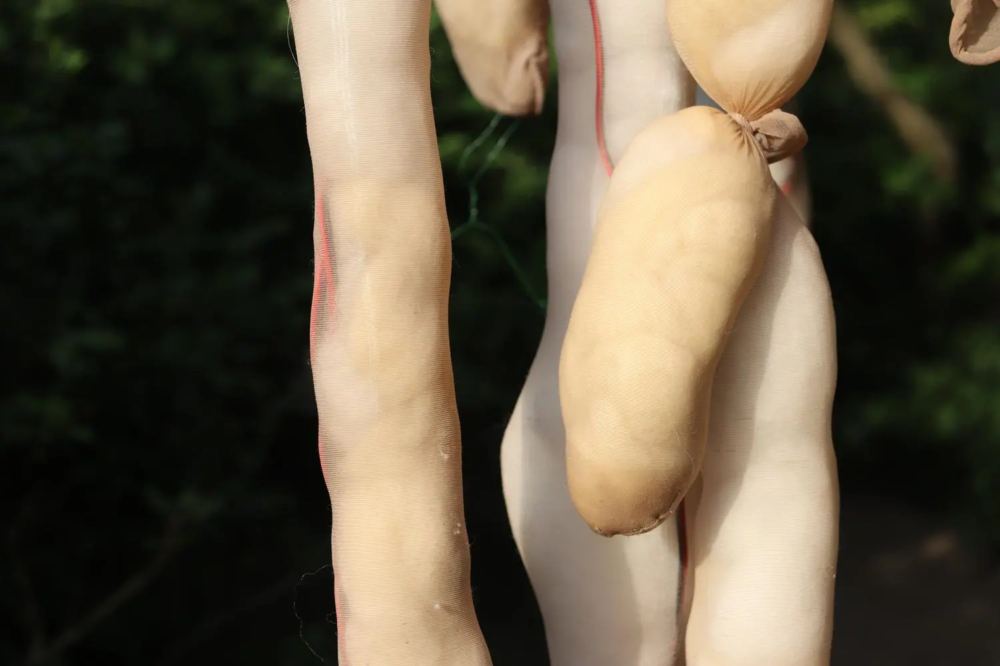
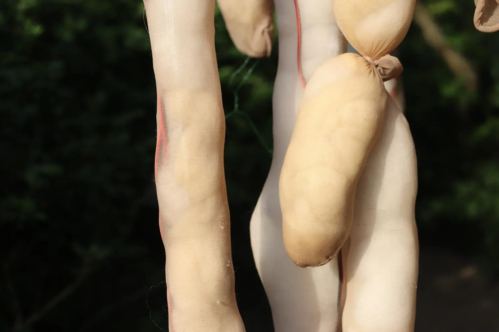

GROWING PAINS
2022
 

I wander. Split between The Netherlands and Spain throughout my childhood and then moving across 12 countries within 3 years, home's definition was pulled and pushed around. With each habit and routine lately though, stability kicks in. As a tree grows above soil, so do its roots settle deeper beneath it.
As I am settling into the roots I am planting in The Hague, both intentional and not, I feel parts of me rejecting. Yet choosing my anchors and sources of nutrition, nur- tures my growth above the soil. In Growing Pains, I have built an extension of my body that externalizes this internal tension. As I move between hooking the roots of my body onto surrounding structures and then fighting against them, I'm soothened by sound.
The audio that stems from this piece contradicts the rhythm of the physical performance to foreshadow what I hope to manifest; a softened hard beat.
In the dunes of The Hague, The Netherlands